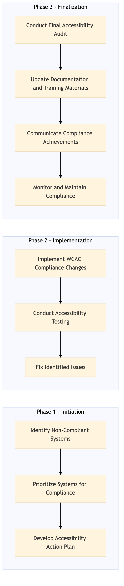

This process document outlines the steps for ensuring WCAG compliance across various OTA and TMC systems to enhance accessibility for all users.
| Trigger | Initiation of a new system update or identification of non-compliance issues during audits. |
| Outcome | All OTA and TMC systems are fully compliant with WCAG standards, providing an accessible user experience for all customers and employees. |
| Systems | Expedia Open World Partner Central Amadeus NDC Sabre GDS Travelport EVC One Key TravelAds AWS SageMaker Snowflake Kafka Salesforce Tableau Concur T2 Concur Expense Amex GBT Neo/Complete Amadeus GDS S/4HANA International SOS Cvent Amex Corporate Card VCN Analytics Cloud Workday |

Click to enlarge
| Step | Name & Pain Point | Role | System | Input | Output | KPI | Flags |
|---|---|---|---|---|---|---|---|
| 1.1 | Identify Non-Compliant Systems Complexity in identifying all potential accessibility issues | Accessibility Specialist | All OTA and TMC systems | WCAG compliance checklist | List of non-compliant systems | 100% system identification within 2 weeks | ⚠ Exception |
| 1.2 | Prioritize Systems for Compliance Balancing resources across multiple systems | Project Manager | All OTA and TMC systems | List of non-compliant systems | Prioritized list based on impact and usage | 100% prioritization within 1 week | ⚠ Exception |
| 1.3 | Develop Accessibility Action Plan Creating detailed plans for complex systems | Accessibility Specialist | All OTA and TMC systems | Prioritized list of systems | Action plan with timelines and responsible parties | 100% action plan completion within 2 weeks | ⚠ Exception |
| 1.4 | Implement WCAG Compliance Changes Technical challenges in implementing changes | Development Team | All OTA and TMC systems | Action plan | Compliance changes implemented in systems | 90% compliance within 3 months | ◆ Decision⚠ Exception |
| 1.5 | Conduct Accessibility Testing Ensuring thorough testing of all features | QA Team | All OTA and TMC systems | Compliance changes | Test results and bug reports | 100% testing coverage within 2 weeks | ◆ Decision⚠ Exception |
| 1.6 | Fix Identified Issues Resolving complex technical issues | Development Team | All OTA and TMC systems | Test results and bug reports | Fixed issues and updated systems | 95% issue resolution within 1 month | ◆ Decision⚠ Exception |
| 1.7 | Conduct Final Accessibility Audit Ensuring complete coverage in the final audit | Accessibility Specialist | All OTA and TMC systems | Fixed issues | Final audit report | 100% audit completion within 2 weeks | ⚠ Exception |
| 1.8 | Update Documentation and Training Materials Keeping documentation up-to-date | Documentation Specialist | All OTA and TMC systems | Final audit report | Updated documentation and training materials | 100% documentation update within 1 week | ⚠ Exception |
| 1.9 | Communicate Compliance Achievements Effective communication of compliance achievements | Marketing and Communications Team | All OTA and TMC systems | Final audit report | Communication plan and materials | 100% communication plan completion within 2 weeks | ⚠ Exception |
| 1.10 | Monitor and Maintain Compliance Ongoing monitoring and maintenance | Accessibility Specialist | All OTA and TMC systems | Continuous monitoring tools | Compliance status reports | 95% compliance maintenance within 6 months | ◆ Decision⚠ Exception |